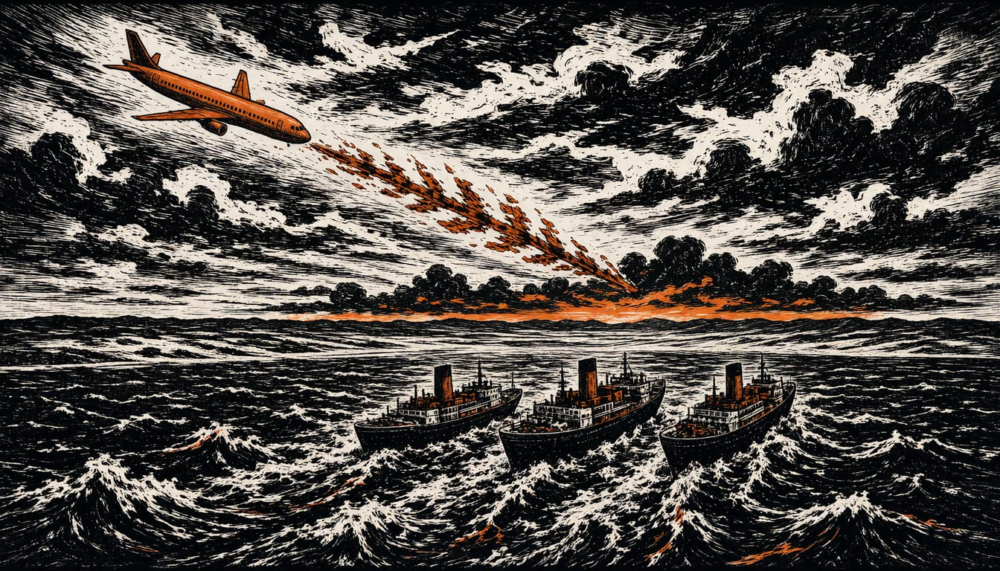

GPS jamming suspected after seven aircraft lose signal at Schiphol
The aircraft landed safely on back-up systems on Monday evening. Wiseman located the source on the North Sea, where HLN and RFI report six Russian-flagged ships were sailing, and the inspectorate is investigating.

On Monday evening 9 November, seven aircraft landing at Schiphol lost their GPS signal for about twenty minutes. The aircraft landed safely with instructions from controllers.
A KLM pilot told the Schiphol tower at 18:19 that both GPS systems had failed shortly before landing. Pilots of Lufthansa and Air France followed. It was the second such large-scale event in four months, according to NU.nl. The ministry said the aircraft stayed in contact with air traffic control and could land thanks to back-up systems. A report has been filed with the Rijksinspectie Digitale Infrastructuur, the digital infrastructure inspectorate, which is now investigating.
The most plausible cause was jamming, according to research by NRC, partly based on work by the American data analyst John Wiseman, who collects aircraft navigation signals. Wiseman located the source on the North Sea north of Texel, possibly a ship. Air traffic control says jamming is the deliberate interference with navigation signals.
At the time of the jamming, six ships under Russian flag were sailing in the area where Wiseman located the source, according to the news sites HLN and RFI. Three of them, the Lady D, the Lady R and the Maia-1, formed a convoy for Russian arms transport according to shipping news sites and are on the European sanctions list for arms transports between North Korea, Iran and Russia. The Russian navy escorted the ships through the North Sea. NRC reports the suspected convoy was shadowed by NATO ships, including a Danish navy ship and a French warship.
The Dutch aviation authority has received hundreds of reports of jamming per month since 2024, mostly involving Dutch airlines affected abroad. A similar incident took place on 23 July 2026. Hexbird reports GPS jamming lasting eighteen minutes affected tens of aircraft on the border of the United Kingdom and the Netherlands.